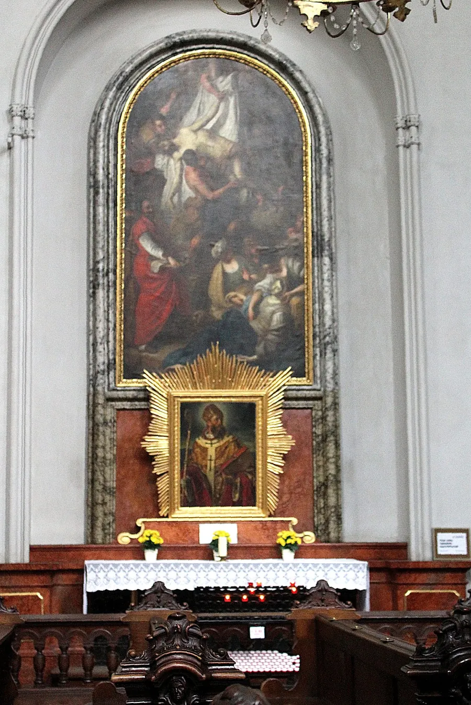
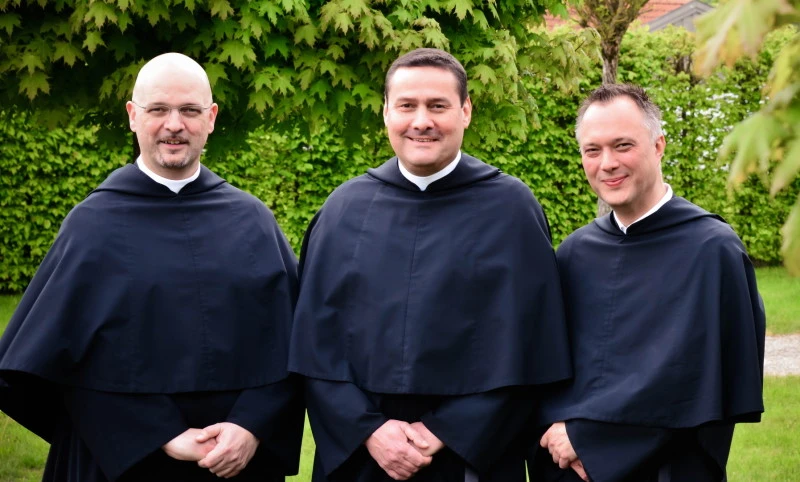
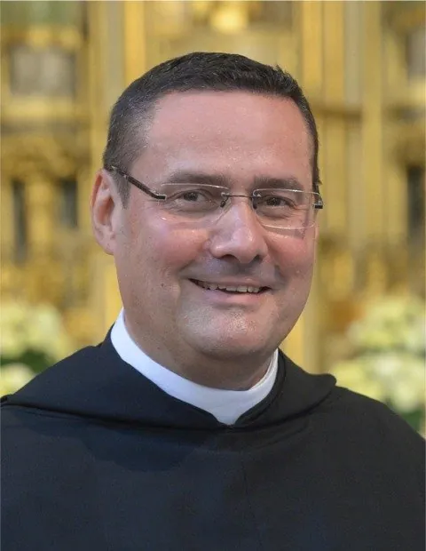

Die Chronik
Über sieben Jahrhunderte Geschichte verbinden die Hofpfarrkirche der Habsburger mit dem Wirken des Augustinerordens in Wien.
Geschichte der Augustinerkirche
1327 stiftete der Habsburger Herzog Friedrich der Schöne den Augustiner-Eremiten eine Kirche mit Kloster neben der Hofburg. Das gotische Langhaus entstand unter Baumeister Dietrich Landtner von Pirn zwischen 1330 und 1339, geweiht wurde die Kirche am 1. November 1349. Zunächst stand der Bau frei; erst mit dem Ausbau der Hofburg und dem Albertinatrakt wurde er Teil des Palastes.
Von 1634 bis 1918 war die Augustinerkirche kaiserliche Hofpfarrkirche, in der die Habsburger heirateten: Maria Theresia und Franz Stephan von Lothringen 1736, Marie Antoinette 1770 in einer Ferntrauung mit dem späteren König Ludwig XVI. von Frankreich, Kaiser Franz Joseph und Elisabeth in Bayern 1854. Seit Wien 1722 Erzbistum wurde, zogen neue Erzbischöfe von hier aus in feierlicher Prozession zum Stephansdom.
1630 berief Kaiser Ferdinand II. die Augustiner-Barfüßer an die Kirche. In ihrer Blütezeit um 1750 bis 1780 lebten bis zu 90 Augustiner im Kloster; der bekannteste war der Volksprediger Abraham a Sancta Clara (1644–1709), dessen Predigten schon zu Lebzeiten gedruckt wurden. 1783 wurde die Augustinerkirche Pfarrkirche, 1784/85 ließ Joseph II. sie durch Oberhofarchitekt Johann Ferdinand Hetzendorf von Hohenberg regotisieren; dabei wurden 18 barocke Seitenaltäre entfernt.
Infolge der josephinischen Reformen starb das Kloster 1836 aus, und 115 Jahre lang betreuten Diözesanpriester die Kirche. 1951 übernahmen aus dem Sudetenland vertriebene Augustiner Kirche und Kloster wieder; zuerst widmeten sie sich vor allem der Pfarre und den Heimatvertriebenen, heute der Pfarrseelsorge und der Ausbildung des Ordensnachwuchses.
Für die Augustiner und die Gemeinde ist die Kirche vor allem ein Ort des Gebets: Hier wird getauft und geheiratet, hier beten Mönche das Stundengebet, feiert die Pfarre ihre Gottesdienste und das Hochamt mit Chor und Orchester.
Die Herzgruft
In der Loretokapelle der Augustinerkirche befindet sich die Herzgruft des Hauses Habsburg. Zwischen 1637 und 1878 wurden hier, in silbernen Urnen, die Herzen von 54 Mitgliedern der kaiserlichen Familie beigesetzt — getrennt vom übrigen Leib, der traditionell in der Kapuzinergruft ruht, während die Eingeweide in der Herzogsgruft des Stephansdoms beigesetzt wurden. Diese sogenannte „getrennte Bestattung" war ein einzigartiger Ausdruck der habsburgischen Memorialkultur.
Die Herzgruft ist nicht öffentlich frei zugänglich, kann jedoch im Rahmen angemeldeter Führungen besichtigt werden.
Führungen durch die Kirche
Erleben Sie die Augustinerkirche und die Herzgruft mit einer fachkundigen Führung.
Gruppenführungen umfassen das Kirchenschiff, den Hochaltar und nach Absprache die Loretokapelle mit der Herzgruft. Für Schulklassen werden Architektur, Geschichte und die Bedeutung der Herzgruft altersgerecht vermittelt.
- Kirchenführung
- Augustinerkirche und Herzgruft, etwa eine Stunde, € 10 pro Person
- Herzgruft
- etwa eine halbe Stunde, € 5 pro Person
Kirchenführer von St. Augustin
Der gedruckte Kirchenführer, gestaltet vom Kunstverlag Peda in Passau mit Texten von Dr. Arthur Saliger, liegt nach den Gottesdiensten beim Kirchenmusiktisch im Foyer und in der Sakristei auf, wochentags in der Pfarrkanzlei. Auf Wunsch schicken wir ihn Ihnen zu: +43 (0)1 533 70 99 (Frau Lechner).
Rundgang durch die Kirche
Ein Rundgang durch die gotische Hallenkirche, ihre Kapellen und Kunstwerke.



Der Kirchenraum
Bis zur Schleifung der Stadtmauern 1857 war die Augustinerkirche der zweitgrößte Kirchenbau Wiens. Der gotische Raum ist eine 80 Meter lange Hallenkirche, davon nimmt der Hochchor 30 Meter ein. Die Bänke im vorderen Langhaus mit reich geschnitzten Wangen und biblischen Szenen schuf Johann Baptist Straub um 1730 für die Schwarzspanierkirche; unter Joseph II. kamen sie, wie andere Stücke aus aufgehobenen Klöstern, nach St. Augustin. Bänke mit dem Emblem Kaiser Karls VI. stammen aus der Josefskapelle der Hofburg bzw. dem früheren Jakoberkloster.
Grabmal der Erzherzogin Marie Christine
Rechts vom Eingang steht das Hauptwerk von Antonio Canova, das Grabmal für Erzherzogin Marie Christine, Tochter Maria Theresias und Gattin Albrechts von Sachsen-Teschen, geschaffen 1798 bis 1805. Auf eine steile Pyramide mit dunkel wirkendem Grabtor schreiten Gestalten der Tugend mit der Urne und der Caritas zu, die einen alten Mann stützt; auf den Stufen ruht ein Löwe, darüber hält ein Genius das Bildnis der Erzherzogin. Das Werk gilt als Hauptwerk klassizistischer Grabmalkunst und diente Canovas Schülern als Vorbild für sein eigenes Grabmal in der Frari-Kirche in Venedig.
Hochaltar
Der steinerne, farbig gefasste Hochaltar von Andreas Halbig ist bereits der fünfte der Kirchengeschichte. Er entstand 1857 bis 1870 im Stil des 15. Jahrhunderts und war ursprünglich für die Votivkirche bestimmt. Der Christkönigsaltar zeigt Christus als Weltenherrscher, umgeben von Engeln und den Namenspatronen Kaiser Franz Josephs. Bei der Innenrestaurierung 1997 bis 1999 wurden seine ursprüngliche neugotische Fassung und Halbigs Ausmalung im Chorpolygon wiederhergestellt.
Presbyterium
Den Altarraum gestaltete 2003 Mag. Johannes Höfinger. Altar und Ambo aus weißem Carrara-Marmor greifen die Dreiecksform auf, angeregt von Augustins Werk über die Dreifaltigkeit, „De trinitate“; die Mensa erinnert zugleich an ein aufgeschlagenes Buch, an Augustins „Tolle lege, nimm und lies“. Sessio, Altar- und Osterleuchter sind aus Chromnickelstahl, das Vortragekreuz ist vergoldet; die Bestuhlung fertigte die Firma Arnauer in Sierndorf.
Georgskapelle
Südlich des Chores liegt die zweischiffige gotische Georgskapelle. Sie wurde als Versammlungsraum der von Herzog Otto dem Fröhlichen gegründeten Georgsritterschaft errichtet, 1337 als Stiftung Ulrichs von Wallsee genannt und 1341 geweiht. Bemerkenswert sind die Wandgrabmäler der Grafen Wirich Daun (von Jakob Schletterer) und Leopold Daun, des Siegers von Kolin (von Balthasar Ferdinand Moll), vor allem aber der Kenotaph Kaiser Leopolds II., den Franz Anton Zauner 1799 schuf. In der Gruft ist auch Gerard van Swieten, der Leibarzt Maria Theresias, bestattet.
Loretokapelle und Herzgruft
Die Loretokapelle, ein Nachbau der Casa Sancta von Loreto, entstand 1627 zunächst mitten im Langhaus und wurde 1784 an ihren heutigen Platz im früheren gotischen Kapitelsaal verlegt. Heute beten hier die Mönche, und an Werktagen werden Gottesdienste gefeiert. Von der Kapelle aus erreicht man die Herzgruft der Habsburger: Ihre Leiber ruhen in der Kapuzinergruft, die Eingeweide im Stephansdom und die Herzen hier.
Sakristei
Die Sakristei schmückt höfisch-eleganter Stuck aus dem Jahr 1719. Die reich geschnitzten Schränke von 1704 fertigten die Ordensbrüder Cajetanus a S. Josepho und Bernardus a S. Antonio, beide gelernte Kunsttischler.
Mehr zu den beiden Orgeln der Kirche finden Sie unter Orgeln in St. Augustin.
Aurelius Augustinus
Aurelius Augustinus wurde am 13. November 354 in Thagaste (dem heutigen Souk Ahras in Algerien) geboren. Nach einem bewegten Leben — geprägt von intellektueller Suche und tiefer Bekehrung — wurde er zum bedeutendsten Kirchenlehrer des Abendlandes.
Seine Confessiones gelten als das erste Werk der europäischen Literatur, das die Innerlichkeit eines Menschen in dieser Tiefe erforscht. Sein Denken prägte Theologie, Philosophie und das gesamte westliche Geistesleben bis heute.
Am 28. August 430 starb Augustinus als Bischof von Hippo Regius. Sein Erbe lebt weiter im Orden, der seinen Namen trägt, und in seinem bis heute viel zitierten Wort: „Unruhig ist unser Herz, bis es Ruhe findet in dir."
Augustinus wurde am 13. November 354 in Thagaste geboren, als Sohn des Patricius und der Christin Monika. In Karthago studierte er Rhetorik; dort kam 372 sein Sohn Adeodatus zur Welt. Ciceros Schrift „Hortensius“ weckte seine Liebe zur Philosophie, zugleich schloss er sich für rund zehn Jahre den Manichäern an.
Nach Lehrjahren in Thagaste, Karthago und Rom wurde er 384 kaiserlicher Professor für Rhetorik in Mailand, wo ihn die Predigten des Bischofs Ambrosius beeindruckten. Im August 386 kam es im Garten zur Bekehrung, als er die Worte „Tolle lege, nimm und lies“ hörte; in der Osternacht 387 taufte ihn Ambrosius gemeinsam mit seinem Sohn. Kurz darauf starb Monika in Ostia.
388 gründete Augustinus in Thagaste eine Gemeinschaft von Laienmönchen. In Hippo Regius wurde er 391 zum Priester und 395 zum Bischof geweiht; auch als Bischof lebte er mit seinen Klerikern in Gemeinschaft, nach dem Vorbild der Urgemeinde, die „ein Herz und eine Seele“ war. Er schrieb unter anderem die „Confessiones“, „De trinitate“ und „De civitate Dei“ und stritt gegen Manichäer, Donatisten und Pelagianer. Er starb am 28. August 430 im von den Vandalen belagerten Hippo; seine Gebeine ruhen seit dem 8. Jahrhundert in Pavia.
Die älteste Lebensbeschreibung verfasste zwischen 431 und 437 sein Freund Possidius, Bischof von Calama, der beim Tod Augustins an seiner Seite war.
Biographie auf augustiner.atAusführliche LebensbeschreibungVita des Possidius
Augustinus schrieb seine Regel um 397 im Kloster seines Bischofshauses in Hippo, rund zehn Jahre nach seiner Taufe und etwa hundert Jahre vor der Regel Benedikts. Überliefert ist sie in mehreren Fassungen: dem kurzen „Ordo monasterii“ mit Weisungen für den Alltag, dem Kernstück „Praeceptum“ und einer Fassung für Frauen. Die heute geltende Form verbindet den ersten Satz des Ordo mit dem Praeceptum.
Ihr Ziel steht gleich am Anfang: Gott und den Nächsten lieben und in Eintracht zusammenleben, „ein Herz und eine Seele auf Gott hin“. Acht Kapitel handeln vom Gebet, von einem einfachen Leben, von Keuschheit und gegenseitiger Verantwortung, von der Sorge füreinander, von Vergebung im Streit, von Leitung und Gehorsam als Dienst und von der Treue zur Regel, die jede Woche vorgelesen wird.
Ab dem 11. Jahrhundert verbreitete sie sich rasch. Regularkanoniker, Prämonstratenser, Dominikaner, Johanniter, der Deutsche Orden, Serviten, Ursulinen und viele hundert weitere Gemeinschaften leben bis heute nach ihr.
Augustinische Spiritualität verbindet das gemeinsame klösterliche Leben mit der persönlichen Suche nach Wahrheit im Gebet und Studium — getragen von der Überzeugung, dass der Mensch Gott zuerst im eigenen Inneren begegnet.
Von Augustinus sind über 100 Werke sowie zahlreiche Briefe und Predigten erhalten, nicht einmal die Hälfte davon liegt in deutscher Übersetzung vor. Die Literatur über ihn umfasst weltweit rund 50.000 Titel, jedes Jahr kommen etwa 300 hinzu.
Der Augustinerorden fördert die Erforschung seines Ordensvaters. Aus dem Würzburger Forschungsprojekt sind das Augustinus-Lexikon und das Corpus Augustinianum Gissense hervorgegangen.
Zeittafel
Der Augustinerorden
Der Orden der Augustiner-Eremiten (OSA) wurde 1256 durch Papst Alexander IV. vereinigt. Er zählt heute weltweit rund 2.800 Mitglieder in über 50 Ländern. Bekannte Augustiner waren Martin Luther, Gregor Mendel und Thomas von Villanova.
Nach dem Tod Augustins lebte sein Mönchtum in vielen Gemeinschaften weiter. Im März 1244 fasste Papst Innozenz IV. toskanische Eremitengruppen, die nach seiner Regel lebten, zu einem Orden zusammen; mit der Bulle „Licet Ecclesiae“ vom 9. April 1256 schloss Papst Alexander IV. weitere Verbände an. Er schickte die Brüder in die Städte, um dort zu predigen und Seelsorge zu leisten. Den Zusatz „Eremiten“ legte der Orden 1963 ab; seither heißt er „Ordo Fratrum Sancti Augustini“, kurz OSA. Das Ordenskleid ist ein schwarzer Habit mit Ledergürtel und Kapuze.
Der Orden breitete sich rasch aus: 1295 zählte er 16, 1329 schon 24 Provinzen von Irland bis Zypern. 1299 wurde die deutsche Provinz geteilt; zur bayerischen Provinz gehörten auch Böhmen, Mähren, Österreich und Polen.
Die Reformation traf den Orden schwer, Martin Luther war selbst Augustiner: Von 160 Klöstern der deutschen Provinzen gingen 69 verloren. Ordensgeneral Hieronymus Seripando führte ihn aus der Krise, und Reformzweige wie die Augustiner-Barfüßer entstanden. Aufklärung, Josephinismus, Französische Revolution und Säkularisation kosteten erneut die meisten Klöster.
Heute gehören zum Orden rund 50 Provinzen, Vikariate und Delegaturen mit mehr als 2.500 Mitgliedern in Europa, Afrika, Amerika, Asien und Ozeanien. Schwerpunkte sind Seelsorge, Erziehung und Unterricht, Mission und Wissenschaft, etwa am Patristischen Institut Augustinianum in Rom.
Zu den Ordensheiligen zählen der Hl. Augustinus selbst als geistiger Vater des Ordens, der Hl. Thomas von Villanova als Vorbild tätiger Nächstenliebe und die Hl. Rita von Cascia, eine der meistverehrten Heiligen des Ordens.
- Thomas von Straßburg († 1357): Ordensgeneral ab 1345 und Hauptvertreter der Augustinerschule. Er hielt sich im Wiener Kloster auf, gilt als Bauberater von Kirche und Kloster und als geistiger Wegbereiter der Wiener Universität.
- Gregor von Rimini († 1358): Neben Thomas von Straßburg der wichtigste Theologe der mittelalterlichen Augustinerschule.
- Leopold Steinreuther (um 1340): Mitglied und 1377/78 Prior des Wiener Klosters; schrieb im Auftrag Herzog Albrechts III. die „Österreichische Chronik von den 95 Herrschaften“.
- Martin Luther (1483–1546): Trat 1505 in das Erfurter Augustinerkloster ein, wurde Professor in Wittenberg und veröffentlichte 1517 seine 95 Thesen.
- Abraham a Sancta Clara (1644–1709): Eigentlich Johann Ulrich Megerle, Augustiner-Barfüßer und gefeierter Wiener Volksprediger.
- David a S. Cajetano Rutschmann (geb. 1726): Baute eine astronomische Standuhr mit 32 Zeigern, die 1769 fertig wurde und lange im Wiener Augustinerkloster stand; heute zählt sie zu den bedeutendsten Stücken des Wiener Uhrenmuseums.
- Gregor Mendel (1822–1884): Augustiner der Abtei St. Thomas in Brünn; entdeckte 1865 nach jahrelangen Kreuzungsversuchen mit Erbsen die Grundgesetze der Vererbung.
- Prosper Kardinal Grech (1925–2019): Maltesischer Augustiner und Bibelwissenschaftler, Mitbegründer und erster Präsident des Patristischen Instituts Augustinianum in Rom.
Burschen ab 16 Jahren und Männer, die über ein Ordensleben nachdenken, können eine Zeit lang im Kloster mitleben und den Rhythmus von Gebet und Arbeit teilen. Für den Eintritt braucht es die Bereitschaft zur Gottsuche und zum Leben in Gemeinschaft, Matura oder Abitur bzw. eine abgeschlossene Berufsausbildung und ausreichende Gesundheit; aufgenommen werden getaufte, gefirmte und ledige Katholiken.
Das Postulat dauert drei Monate bis zwei Jahre und beginnt mit der Einkleidung; es kann in Wien oder in Zwiesel verbracht werden. Es folgt das zwölfmonatige Noviziat, das mit der zeitlichen Profess endet. Im Juniorat, drei bis fünf Jahre lang, wird die Profess jährlich erneuert, und es bleibt Zeit für Studium und Ausbildung; Studienhaus ist das Augustinerkloster in Wien. Mit der feierlichen Profess bindet sich der Mitbruder lebenslang an den Orden.
Ansprechpartner ist Ausbildungsleiter P. Dominic Sadrawetz OSA: +43 (0)1 533 09 47, p(dot)dominic(at)augustiner(dot)at.
Das Augustiner-Vikariat Wien
Das Augustiner-Vikariat Wien umfasst mehrere Niederlassungen und Pfarren in Österreich und Süddeutschland, darunter die Augustinerkirche Wien als bedeutendste.
Das Vikariat wird von einem Vikar geleitet, der die Niederlassungen in Österreich und Süddeutschland in geistlichen und organisatorischen Fragen vertritt und mit dem Provinzialat des Ordens in Verbindung steht. Anfragen zur Leitung richten Sie an die Pfarrkanzlei der Augustinerkirche.
Das Augustiner-Vikariat Wien „Maria Trost“ hat sein Leitbild bei den Pfingsttreffen 2006 und 2007 erarbeitet. Es ist verbindliche Grundlage des Ordenslebens und dient der regelmäßigen Besinnung, allein und in Gemeinschaft.
Die Augustiner verstehen sich als verbindliche Lebensgemeinschaft auf der Grundlage von Regel und Konstitutionen, als Einheit in Vielfalt, getragen von Liturgie und lebenslanger Bildung. Sie wollen das Leben miteinander und mit den Menschen mit einer lebendigen Gottesbeziehung verbinden, wertschätzend miteinander umgehen, Konflikte offen austragen und Ämter als Dienst verstehen, über den jedes Jahr Rechenschaft abgelegt wird.
Nach außen wollen sie Menschen auf der Suche nach dem Sinn ihres Lebens begleiten, unterstützt von haupt- und ehrenamtlichen Laien. Geteiltes, gedeutetes und gefeiertes Leben, Diakonia, Martyria und Leiturgia, machen für sie gemeinsam Menschwerdung aus.
Schon 1285 entstand in Baden bei Wien das erste österreichische Augustinerkloster, um die Mitte des 14. Jahrhunderts folgten zehn weitere. Nach Verlusten in der Reformationszeit wuchs die Zahl der Konvente im 17. Jahrhundert wieder auf 14. In der josephinischen Zeit blieb der Nachwuchs aus, 1837 starb der letzte Augustiner in Österreich.
Nach dem Zweiten Weltkrieg bildeten die vertriebenen sudetendeutschen Augustiner einen eigenen Ordensverband, zunächst abhängig von der Deutschen Augustiner-Provinz; seit 1951 wirken sie an der Augustinerkirche in Wien. Daraus wurde das Augustiner-Vikariat Wien „Maria Trost“, das direkt dem Generalprior in Rom untersteht. Zu ihm gehören die Klöster St. Augustin in Wien und Maria Trost in Zwiesel im Bayerischen Wald (seit 1962).
Die Mitbrüder wirken in der Pfarr-, Schul- und Lehrlingsseelsorge, im Unterricht, im Studium und in der Ausbildung des Ordensnachwuchses.
Das Vikariat begleitet junge Männer auf dem Weg in die Gemeinschaft durch Postulat, Noviziat und weitere Ausbildungsschritte und ermöglicht den Mitbrüdern fortlaufende theologische und spirituelle Weiterbildung.
Die Augustiner in Wien
Seit 1327 in Wien präsent, seit 1951 erneut von den Augustinern getragen, verbindet die Gemeinschaft klösterliches Leben mit aktiver Seelsorge und kulturellem Engagement in der Innenstadt.
Der Wiener Konvent besteht heute aus einer kleinen Gemeinschaft von Augustinern, die das klösterliche Leben mit der Seelsorge in der Pfarre St. Augustin und dem Dienst an der Kirchenmusik verbinden. Die Mitbrüder leben nach der Regel des Hl. Augustinus in gemeinsamem Gebet, Mahlzeiten und geistlichem Austausch und stehen den Gläubigen der Pfarre als Ansprechpartner zur Verfügung. Persönliche Begegnungen sind über die Pfarrkanzlei vermittelbar.



Pater Dominic wurde 1966 in Wasserburg am Inn (Erzbistum München-Freising) geboren. Nach seinem Eintritt in unsere Ordensgemeinschaft 1985 und seinem Noviziat in Deutschland legte er 1988 seine Profess ab und wurde 2000 zum Priester geweiht.
P. Dominic war in dieser Zeit mit verschiedenen ordensinternen Aufgaben (Prokurator, Bibliothekar, Schriftleiter von „Kirche am Ort. Mitteilungsblatt der Augustinerkirche Wien" und des „Augustiner-Rundbrief" u. a.) betraut. Seit 2002 leitet er als Moderator die Pfarre St. Georg, Aspersdorf (Niederösterreich), seit 2021 als Pfarrvikar.
Mit dem Jahr 2006 wurden P. Dominic im Augustiner-Orden Leitungsaufgaben anvertraut: Seit 2006 leitet er als Prior das Wiener Augustinerkloster, von 2007 bis 2017 war er Regionalvikar des Augustiner-Vikariates Wien. 2011 übernahm er als Prior auch die Leitung des Zwieseler Augustinerklosters sowie die Leitung des Gästehauses der Augustiner in Zwiesel. Für das Augustiner-Vikariat Wien ist er außerdem als Ausbildungsleiter für die Kandidaten, Postulanten und Studenten zuständig sowie auch für die Berufungspastoral verantwortlich. 2015–2016 war er Novizenmeister, 2017–2025 Vikariatsrat und Sekretär des Augustiner-Vikariates Wien.
2008 wurde P. Dominic bei der Investitur der österreichischen Statthalterei in Frauenkirchen (Burgenland) in den Ritterorden vom Heiligen Grab zu Jerusalem aufgenommen; 2017–2025 war er Prior der Komturei Wien dieses Ritterordens. P. Dominic arbeitet zudem in der City-Seelsorge an der Augustinerkirche Wien mit und begleitet seit 2006 als Seelsorger die Mitglieder der Akademisch Katholischen Verbindung Aggstein zu Wien. Mit 28. August 2025 wurde er erneut zum Regionalvikar des Augustiner-Vikariats Wien ernannt und zum Firmspender für die Erzdiözese Wien.

Pater Matthias wurde 1972 in Wien geboren und trat nach einer Floristenlehre 1992 in unseren Orden ein. Nach seinem Noviziat in Italien legte er 1995 seine Profess ab und wurde 2010 zum Priester geweiht.
P. Matthias war von 2005 bis 2017 Sekretär des Augustiner-Vikariates Wien, von 2009 bis 2017 auch Vikariatsrat. Im Wiener Augustinerkloster war er von 2011 bis 2017 Subprior. Von 2017 bis 2025 leitete er als Regionalvikar das Augustiner-Vikariat Wien.
Seit 2011 ist P. Matthias Pfarrer der Pfarre St. Augustin, Wien 1. Bereits 2008 übernahm er die Verantwortung für die Kirchenmusik von St. Augustin, die Schriftleitung unseres Mitteilungsblatts „Kirche am Ort" und die Öffentlichkeitsarbeit. Seit 2011 unterrichtet er als Berufsschullehrer an der SPAR Akademie. Mit September 2020 hat Kardinal Schönborn P. Matthias zum Firmspender für die Erzdiözese Wien ernannt. Mit 1. Juni 2024 wurde er zum Dechant des Wiener Innenstadt-Dekanats ernannt.

Pater Nikolaus wurde 1971 in Wien geboren und wurde als Kalasantiner 1999 zum Priester geweiht. Im Jahre 2003 trat er von der Kalasantiner-Kongregation in unseren Orden über und legte im Jahr 2006 seine Feierliche Profess auf unsere Gemeinschaft ab.
P. Nikolaus unterrichtet seit 1998 in zwei Wiener Berufsschulen Religion, Kulturpflege, Politische Bildung und Deutsch & Kommunikation.
Seit 2006 ist er als Prokurator für die finanziellen Angelegenheiten des Konventes, seit 2009 als Vikariatsprokurator für die Finanzen des Augustiner-Vikariates zuständig. Seit 2011 ist er Vikariatsrat und Schriftleiter vom „Augustiner-Rundbrief". P. Nikolaus arbeitet auch in der City-Seelsorge an der Augustinerkirche Wien mit.
Neben der täglichen Pfarrseelsorge — Gottesdienste, Sakramentenspendung, Beichte und Begleitung in Lebenskrisen — engagieren sich die Augustiner in Wien in der Trägerschaft der Kirchenmusik von St. Augustin, in der Betreuung der Herzgruft und Führungen sowie im ökumenischen und kulturellen Austausch der Inneren Stadt.
Von 1327 bis 1836 wirkten Augustiner an der Kirche, die von 1634 bis 1918 Hofpfarrkirche der Habsburger war. Nach der Aufhebung des Klosters 1836 betreuten 115 Jahre lang Diözesanpriester die Kirche, bis 1951 aus dem Sudetenland vertriebene Augustiner Kirche und Konvent wieder übernahmen — eine Geschichte ausführlich nachzulesen unter Geschichte.
Links
Weiterführende Seiten zum hl. Augustinus, zum Augustinerorden und zur Kirche in Österreich.
Über den hl. Augustinus
- Zentrum für Augustinus-Forschungwww.augustinus.de
- Wikipedia: Augustinus von Hippode.wikipedia.org/wiki/Augustinus_von_Hippo
- Ökumenisches Heiligenlexikonwww.heiligenlexikon.de/BiographienA/Augustinus.html
Der Augustinerorden
- Generalkurie des Ordens in Romwww.augustinians.net
- Augustiner in Österreich und Süddeutschlandwww.augustiner.at
- Augustiner werdenwww.augustiner-werden.at
- Deutsche Augustiner-Provinzwww.augustiner.de
- Augustinerkloster Zwieselwww.augustiner-zwiesel.de
- Gästehaus der Augustiner in Zwieselwww.gaestehaus-zwiesel.de
St. Augustin und Aspersdorf
- Pfarre St. Georg, Aspersdorfwww.aspersdorf.at
Kirche in Österreich
- Katholische Kirche in Österreichwww.katholisch.at
- Erzdiözese Wienwww.erzdioezese-wien.at
- Kathpresswww.kathpress.at
- Ordensgemeinschaften Österreichwww.ordensgemeinschaften.at
- Ordensgemeinschaften in Deutschlandwww.orden.de
- Ritterorden vom Heiligen Grab zu Jerusalem, Statthalterei Österreichwww.oessh.at
Schutz vor Gewalt und Missbrauch
- Ombudsstellen der katholischen Kirchewww.katholisch.at/pages/ombudsstellen/ombudsstellen
Studentenverbindungen
- AKV Aggstein zu Wienwww.aggstein.wien
- Kartellverband (ÖKV)www.kartellverband.org
Gott und die Seele begehre ich zu erkennen. Nichts sonst? Nichts anderes!